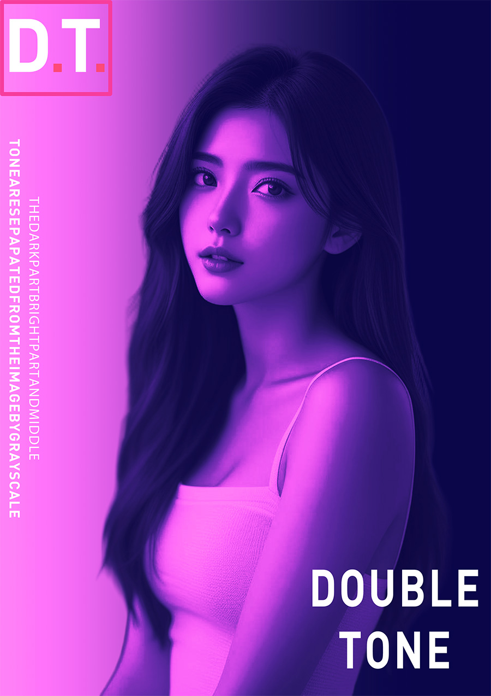

视频教程： https://youtu.be/QvK29sqO-0g
视频中使用的素材：点击下载>> | 备用下载>>
以下是PS双色调成品效果

步骤：
首先我们Ctrl+N新建个文档创建
然后我们把素材拖进来
按着Ctrl+T这样给他缩小一点点
我们点击右击 改成栅格化图层
然后我们点击图像调整选择一个黑白
我们在这里选择一个渐变映射
然后 这里
我们改个颜色
这颜色我尽量改个颜色深一点的
确定
这里 我们改一个浅一点的紫色
颜色稍微浅一点的 确定
确定 然后想要他质感强一点的话我们点击这个颜色终点
把它改成72 确定
然后我们调出个曲线
让他质感再加强一点
然后点击右键创建剪贴蒙版
让他们都环绕这个人物上面
然后我们点击AIt健再复制一个
然后我们对背景
适当调一下
给背景调个渐变
这里我们选择一个 镜向渐变
然后我们按住Shift给他拉一条直线
我们把这里
我们把这里 颜色终点改成一个50
确定
然后我们再拉一下
然后我们Ctrl+AIt+Shift+E给他盖印一个图层
这里我们调出一个色相饱和度
把他质感再加强一点点
这里调出一个曲线
这样质感就非常强
最后我们再来添加一下文案 这个效果就完成了